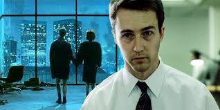

|
A Harcosok klubja 1999-ben bemutatott amerikai filmdráma David Fincher rendezésében.
Chuck Palahniuk azonos című regényének adaptációja.
A forgatókönyvet Chuck Palahniuk és Jim Uhls írta.
A főszereplők Edward Norton, Brad Pitt és Helena Bonham Carter.
|  | .jpg) |
| Edward Norton a főszereplő | Tyler Durden a sztori kezdője és tovább vivője |
Egy ember történetét mutatja be aki az őrület szélén van és a végén egy forduló pont miatt tudjuk meg miről szólt az egész.
A film egy álmatlan átlag tűnő ember (Edvárd Norton) mentális szétszakadását mutatja be,
mely hatására az egész amerikai társadalmat és gazdaságot felzavarja.
Az álom hiány miatt meglátogat egy orvost, az interakciójuk úgy végződik,
hogy elmegy egy klubba itt sírhat férfiakon és ezután újra tud aludni.
Később több hasonló klubba megy, de az életét felzavarja egy nő ami után megint nem tud aludni.
Az alváshiány hatására személyiség szakadása lesz, de ő ezt nem tudja
és azt gondolja a másik személyisége egy valós személy.
A második személyiségével egy harc klubbot csinál, egy bár mögött késöbb a bárban.
A második személyisége Tyler Durden a tudta nélkül az egész országban klubbokat nyit
és létre hoz egy terrorista szervezetet.
Ez után Tyler eltűnik és Norton megkeresi. Az egész országban keresi és találja nyomait, de nem őt.
Eközben mikor aludna a másik személyisége újjabb klubbokat hoz létre.
Egy idő uán megtalálja és rájön, hogy ő Tyler és egy összeesküvést csinált,
mely egész amerika gazdaságát összeomlassza.
Megprólja ezt megállítani, de Tyler megállítja. Aztán az emberei elkapják a nőt,
akitől lett ilyen. És ekkor Tyler meghal
Ő bocsánatot kér tőle és háttérben megtörténik az összeesküvés.
Ezzel véget ér a film. A film mondani valója az az,
hogy a modern férfi gyenge nem tud vere kedni és kerüli a fájdalmat.
És megpróbálja a nézőt ösztönözni,
hogy törjön ki a ciklusból és próbáljon a komfort zónájából kiszállni.
10/10 Ajánlanám minden fiúnak 15 éves kor felett.
És többször újra nézhető. Nem család barát!
.jpg)
Itt van a forduló pont
A film konfliktusát Marla Singer indítja,
ki a főszerplő életét felbolygatja.
Innen indúl ki a cselekmény,
melynek a tető pontja a fentebbi kép,
ebbe derül ki,
hogy ki Tyler Durden valójában.
Utána jön a végkifejlet,
melyben Tyler terve megvalósul.
A film végét lehet jó végződésnek és
rossz végződésnek is nézni,
attól függően, hogy mi a személyes nézeted és
kivel szimpatizáltál.
Az első megnézés után ajánlom az újra nézést a film értelmezési céljából.
A filmben kettőször helyeztek el egy képkockát, amit nem feltétlen akar látni az ember, és ezeket történésekkel teli jelenetekbe rakták, egyéb kritikám nincs.
Kritikusoknak a film azért nem tetszett mert agressziót és fasizmust támogat.